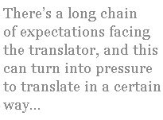

B. J. Epstein
Kristian
by Mats Kempe
translated by BJ Epstein
Carina is sitting in the lawn chair that is pulled forward to the garden table, sitting leaning back, the cut from her operation still not healed. And she says that she has pain, my abdomen aches, she says, but she must have heard it from someone else, as those are not her own words and her feet don’t reach the grass. Her legs dangle, or hang you should say, since she has them completely still. I see her through the kitchen window, I am standing by the sink, waiting for Mamma to ask me to carry out the cake, since it’s Mamma’s birthday, forty-one, and it is a little birthday party, since it’s just the three of us. Maybe four. Our aunt hasn’t come yet, doesn’t want to stay with us in the cabin but instead has rented a room at the hostel by the bay and isn’t staying more than one day. My sister must have fallen asleep in the lawn chair, as her head is hanging like a little limp…yeah, I don’t know, monkey, chimpanzee, and Mamma asks me why I haven’t made juice, mixed a pitcher, she has of course asked me
why haven’t I made juice…do you think?
I answer her and I have a striking voice. I can coax from it many different nooks, lots of pitches and different dialects, but always clean and clear, STRONG
why do YOU think…that I haven’t made JUICE?
she looks at me as though doubtful and then puts the cake in my hands, the dish with the white cake-paper, tells me that we are going to go out, sourly, but I don’t care, because I feel sorry for her, little Mamma, that it’s only us, so few on her birthday
little Mamma
I say but she acts as though she didn’t hear me and I carry the cake, straight arms, carry the dish over my head, out through what she calls the glass veranda, down the recently bricked stairs and my soft feet meet the dark-green grass and Carina looks at me. I see that she sees me and I dance a little dance, jambolou, JAMBALOU, my voice imitates but I don’t know what, where the word comes from and I swing my thin legs in half-circles, like painting half-moons in the air, I am so silly and I have to be careful with the cake dish. Carina smiles, I can make her laugh so easily
so, you’re laughing, is it funny when I dance, then you don’t get to taste
I joke and she stops smiling when I put the cake down on the table. A rose in some man-made material, push it down with my ring finger so the chocolate cream gets sticky around the petals. Then it rises slowly up out of the cake and I push it again, glance towards my sister who looks so brittle since they took out her appendix, my little sister who has had an infection in the sore. I want to make her laugh and I take some of the cake’s cream with the top of my pointer finger to put a smeared spot on the tip of her nose, but she turns away and it becomes a thin chocolate string on her cheek instead
don’t you want to taste, have you changed your mind
and I sit down on the sofa though I don’t really want to. Don’t want to sit still, lean forward over the slatted table, half-sit with my elbows against the table surface so that the marks, stripes, show red on the skin on my underarms
do you want to know a secret
I ask though I have nothing to say and she doesn’t answer, looks more uncertain
nah, well then you don’t get to know, I’ll just tell Mamma, since it is her birthday
I continue and Carina gets disappointed. But it’s her own fault if she doesn’t want to laugh and she asks what it is I won’t say, but
it’s your own fault
I answer her and it is as though I hear music, playing inside my body, in my arms, limbs. The kind of classical music Pappa used to play before he moved to Skanör and I start directing with my hands. Move carefully between the sofa and the edge of the table, since I need larger swinging room, precise movements and the rhythm create a beautiful unit but my sister doesn’t understand that, she laughs now and I have to hum so she can understand what I am doing. And then I get tired
little monkey
I say, but when I see that it irritates or makes her sad, I change
my cute little monkey
I joke.
Mamma, we have been waiting a very long time and you have to agree with that
but she doesn’t answer. She is busy on the phone, and I stand so I am totally visible, yes, I want her to see me and I try to hear who she is talking to. But it is not Aunt Siri. I would guess that it is someone from work, her boring job that she doesn’t enjoy, cashier at a large post office and I will be something else when I get big. I have told her that, I want to learn different languages, foreign. And she gets bothered by me standing so close, tries to turn to the side, shield herself with her shoulder, but that doesn’t stop me from listening, Mamma, my little silly fool, but instead I begin singing in a monotone
Maa-maa, Maa-maa
since now I have no music inside me, it is just mute and empty and
Maa-maa
then she ends the conversation. Puts back the receiver and strokes my head. Says I should go out before her, since she is just going to get the coffee, and the juice that I should have mixed, but she doesn’t say anything about that, pretends it was nothing, because such things don’t matter and I don’t have to care about it, we have forgotten it now, and then I slap her bottom. I smack her right cheek with the palm of my hand and then she actually speaks up
Kristian. Stop it
she says and then nothing more. She continues into the newly cleaned kitchen. And when I stop on the stairs I see my aunt walking on the path by the fence. She stops by the gate and fights with the hasp that jams if you don’t first pull the gatepost towards you
Siri’s coming now, Siirriioi
I stretch my mighty voice up into a falsetto. I can move my voice in different ways and end in a strange little braying, but it is not as easy to get Mamma to laugh as it is to get Carina, not anymore, and she says that I should hurry out and welcome Aunt Siri, and Mamma will come soon
of course
I say, but I mean the opposite and it is not just said as a joke.
But Mamma doesn’t take particularly long. We have only had time to greet Siri and just sat down on the garden sofa when Mamma rushes down the stairs with the coffeepot and juice carafe. And she shines with her mouth, the teeth clearly showing, but her eyes are watchful. She studies Siri and I see how it jerks almost electrically around the corners of Aunt’s mouth when she stretches a package with silver wrapping paper and a red ribbon to Mamma and they hug, kiss, say nice things before Mamma sits down to see what is in the package. And I am angry at Mamma, because I had also wanted to give her a present. She says that it isn’t necessary. She has not given us any money, not wanted to drive us to the store and I can not show you how much I care about you, Mamma. Aunt Siri’s package has a candleholder in porcelain or plaster, represents a bird painted in a blue pattern with room for a little tealight on the back, between the wings, and I don’t know if Mamma is happy for it because she says nothing. She just smiles, thanks comes first after a bit, thanks, how nice it is, and I reach for the present, because I want to look more closely at the glossy, gray-bright birdeyes.
And Mamma slices up the cake, says nothing about the sticky rose, serves the coffee, the juice. And Carina sighs, turns her head with effort and whimpers, has her eyelids pressed together into a little monkeygrimace and Mamma gets worried, maybe also irritated, asks how things are. How things are with Carina. If the sun is bothering her, if it is getting too hot, if she would rather sit in the shade, and Carina just answers mmh, nodding weakly and Mamma says that we will help her, lift her in the chair. A bit away. Where the fir blocks the sunlight. And they rise, Mamma and Aunt Siri, each take an armrest and Mamma says to me, Kristian, that I must help them. But when I take hold up by Carina’s back there is no weight to bear, so it almost becomes as though I tip her out of the chair and I see that they manage fine without me so I dance a hard and swinging dance for my aunt. I hold my arms out from my body, bent, sweep them like veils, but she doesn’t see me, acts like I don’t exist, continue to drag the sofa and chairs over to where Carina is now sitting. Last they carefully lift the slatted table with the cake, coffee, juice, and present. And then we sit down again. I look at my aunt, I see that there is something special, something that isn’t as it should be and then I say it
but Siri, you are tipsy, you are drunk
and I laugh with my voice, shrill, even though I am not sure of what I said, because maybe she is just down, but Mamma says
now you stop it, Kristian
and there is something about the smell. Siri smells strongly like the polish Mamma uses for the copper and now I am sure I am right
but Siri, you drink
I rejoice and beat my fists against my chest to make a strange, attractive sound with my mouth. Kristian, says Mamma, but it almost sounds listless and Siri looks as though she hasn’t heard what I said, though she can not have missed my voice and it is like there is no stop. No far edge. They don’t care anymore about what I am saying and that’s why I don’t get anything said. I wish I could say it in French or Spanish, speak out, but instead I imitate the sound of a bottle
gulp-gulp-gulp-ulp-ulp-ulp-ulp
my voice says more lightly with every ulp, and Mamma doesn’t listen, Siri looks to the side, and only Carina has trouble holding in a laugh, she giggles like a chimpanzee when she looks at me. But then she turns towards Mamma and becomes serious, like she is as sorrowful in the same way as the others and I think she is cowardly, my little monkey
Carina, I am disappointed in you, you are cowardly
I say but she avoids my gaze.
Mats Kempe is a Swedish novelist and short-story writer. This story is from his collection Saknar dig sällan så mycket som nu (Miss you seldom so much as now) and is his first published work in English.
What is translation?
Frankly, that’s too hard a question, so let’s start with an easier one, and work backwards. What isn’t translation?
Translation is definitely not — despite what many people believe — simply looking up words in a bilingual dictionary and then writing down their equivalents in another language. It is true, of course, that translation means the “carrying across” of a text from one tongue to another, but it is about so much more than individual words. The context is essential, as is the culture behind all those words. If a translator can’t understand what is said in a text and why and how that connects to the language and its culture as a whole, no pile of dictionaries is going to be able to explain that to her/him. Translators need to be language experts and culture experts; translation is (we’re getting a little closer to an answer now!) a form of linguistic-based anthropology, or maybe that should be anthropology-based linguistics, or, in reality, both.
But that’s not all, even if it’s a good beginning (did you think it was enough?). Translation is not just a matter of picking up a pen (or pecking at a keyboard) and blindly following whatever the author has said, presuming of course that the translator has done her/his linguistic and anthropological work and has understood the text in question and the words within it and the culture and background that informs those words. Translation is not a mechanical activity. Translators are also creative writers; they have to have excellent writing and editing skills in their mother tongue, because their job is to recreate this text in that language. To translate is also to write, to become the voice of that author and that novel orpoem (or story or play or essay, etc.). It is acting, with the difference that the product is not a movie but a text. Therefore the translator must be a confident and talented actor and writer, ready to say what has been said before, but in a new language, in new circumstances, for a new audience.
Did I mention the audience? What do they have to do with the translator’s task? Well, readers tend to have expectations for the texts they read; likewise, publishers have expectations for the work they publish, and book-sellers and librarians for the work they make available to consumers, and so on. There’s a long chain of expectations facing the translator, and this can turn into pressure to translate in a certain way and to make texts from the source culture conform to the ideas about literature and demands from the target culture. Translation is not reshaping texts to fit what the audience or market expects or requires. Translators consider norms and are familiar with literature in both cultures, but they generally should not rewrite the work to serve a specific purpose or to suit a specific style. It’s a balancing act, and they want to serve the text and its author as well as the audience.
By discussing what translation is not, we have now gotten to the point where we can safely (I hope!) say that a translator is a bilingual, bicultural, linguist-anthropologist-writer-actor-editor who executes the delicate task of performing and recreating a text in a new language and culture, while both considering the author’s, text’s, audience’s, and market’s needs and expectations, and also, as necessary, disregarding them.
Phew! If it was this difficult to define translation, can you imagine what it must be like to actually do it?
|